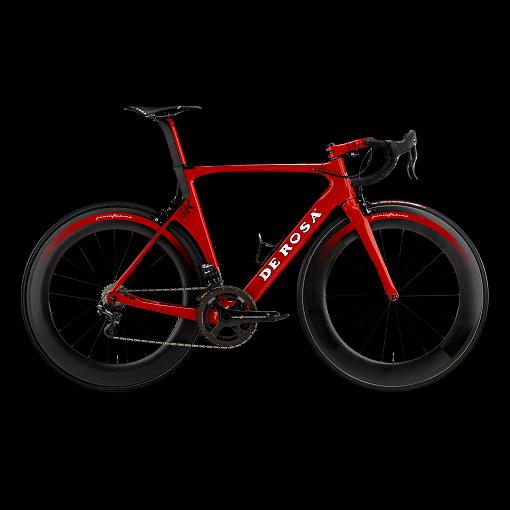

Consider the Bicycle
Consider the bicycle–more specifically, the De Rosa SK Pininfarina:

I think it’s beautiful, but I wouldn’t call it art, because being beautiful isn’t its primary purpose. It was created to be useful; the fact that it can also be appreciated aesthetically is an intentional bonus.
English doesn’t have a word for things like this, but there are lots of other examples. Architecture and typography have deep roots, and starting in the early 20th Century, people like Christopher Dresser, Joseph Sinel, and above all Raymond Loewy established industrial design around the idea that mass-produced artifacts were worthy of serious analysis from an aesthetic as well as a utilitarian point of view.
Now think about your favorite piece of software. We have long accepted that its interface can and should be critiqued in the same way as a power drill:
- Does it do what it’s supposed to?
- Is it pleasurable to use?
What’s missing is the third leg of the industrial design tripod:
- Did its design facilitate its manufacture and maintenance?
At a deeper level, what’s really missing is the combination of an agreed vocabulary and a suite of canonical examples that would allow us to critique software in the way that we can critique a couch or a train. We use words like “elegant” when referring to Unix’s pipe-and-filter model, but when asked to explain, we run out of meaning long before any reasonably intelligent industrial designer runs out of ways to think about the design of a new blender. Will the materials hold up under constant use? Can it be assembled at a reasonable cost? Will people understand how to use it without having to wade through a manual? Will it please the eye when it’s sitting on the counter? Training in industrial design gives weight to all of these separately and together, and gives students the tools they need to tell the good from the bad.
In retrospect, I think this is what I was groping toward with Beautiful Code and The Architecture of Open Source Applications. I think that if our community had decided fifty years ago to think of what we do as “industrial design for software” rather than “software engineering”, our conversations would be intellectually richer today.
I don’t know how to get there from here. I thought that getting good software designers to talk about their craft would start a larger conversation, but that hasn’t happened. Thousands of people are blogging and presenting at tech conferences, but their thoughts haven’t been gathered into a coherent whole in the way that a dozen different books at my local library do for garden design. I’ve argued elsewhere that software engineering is finally going to live up to its name as we start to analyze real-world data. As that happens, I hope that we learn how to talk amongst ourselves about the beauty of software as well, because it is beautiful, and we deserve to have ways to say that.